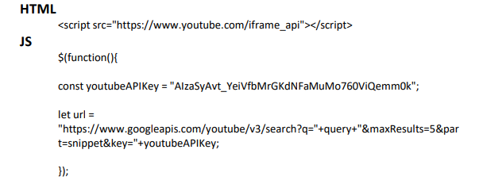
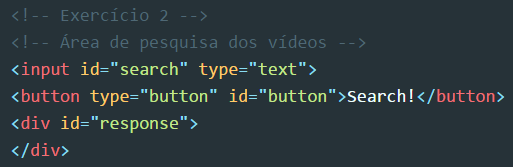
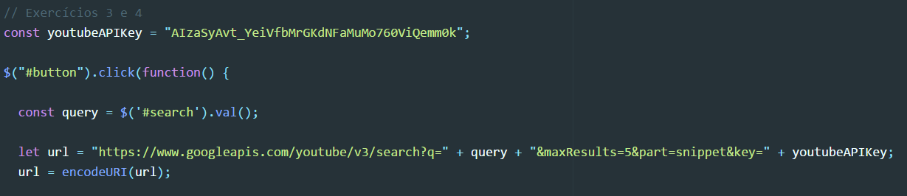
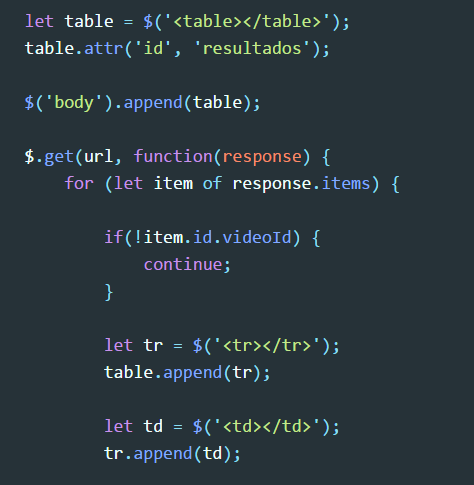
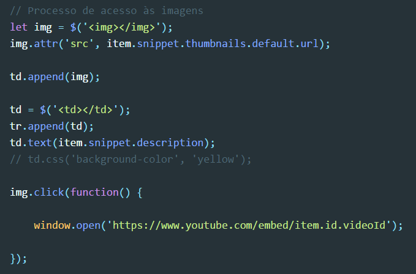
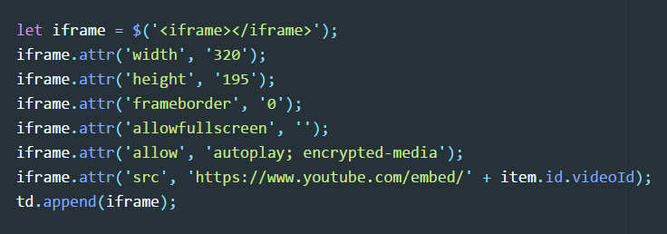
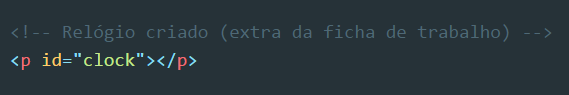
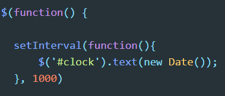
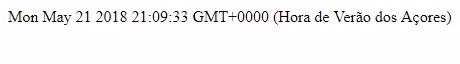

Resolução e análise à ficha de trabalho nº 6
Documento pdf associado: Ficha de trabalho nº 6
A ficha de trabalho nº 6 trata-se novamente de uma espécie de "auxílio" para a resolução do trabalho final da cadeira, pois exemplifica pedidos AJAX à API (Application Programming Interface) do YouTube. Foi demonstrado como seriam logrados os resultados do pedido e ainda a forma como os mesmos seriam passíveis de serem editados.
Destaques a salientar:
- A implementação da técnica AJAX na ficha de trabalho foi conseguida com auxílio da biblioteca JavaScript jQuery;
- Tal como na ficha de trabalho anterior, esta foi dividida em dois documentos distintos, mas associados. Um ficheiro HTML onde a funcionalidade "estática" do pedido viria a ser tardiamente implementada. O outro tratava-se de um documento exterior com código JavaScript/jQuery, onde o pedido à API viria a ser efetuado.
- Tal como na ficha de trabalho nº 4 e ficha de trabalho nº 5 , a documentação online da biblioteca jQuery poderia ser consultada, acrescentando a esta consulta o estudo da API do YouTube respetivos pedidos:
- Primeiro link de refência associado à API do Youtube: https://developers.google.com/youtube/v3/docs/search/list;
- Segundo link de refência associado à API do Youtube: https://developers.google.com/youtube/iframe_api_reference.
- O Sistema de Controlo de Versões Git deveria ser utilizado em cada alínea da ficha, sendo desenvolvidas diferentes branches em cada uma destas. No final deveria ser feito merge de todo o projeto na branch master;
- Por fim, foi pedido a cada um dos discentes que utilizasse o seguinte código-fonte no início da resolução da ficha:
- Como "parte HTML" deste código fonte é de notar a ligação à API que possibilitava a aplicação de "iframes";
- No código fonte JavaScript é de notar a inclusão de uma "API Key" do YouTube (utilizada para realizar os pedidos mais tarde),guardada numa constante de mesmo nome. Também foi fornecido um url inicial que se verificou que poderia ser modificado consoante as necessidades do utilizador (sendo guardado numa variável local denominada de "url");
- Destaque para o facto do código presente no ficheiro JavaScript seguir as boas práticas da aplicação da biblioteca jQuery, sendo o documento carregado antes de qualquer "codificação".

Exercício 1: Inicie um novo repositório e faça o versionamento inicial:
Resolução:
Procedi ao versionamento inicial da ficha de trabalho da forma que me foi ensinada ao longo da cadeira e já utilizada por mim entretanto em praticamente todas as outras fichas de trabalho, utilizando os seguintes comandos, por ordem:
- $ git init
- $ git config user.name "Paulo Cunha"
- $ git config user.email "paulo_cunha1997@outlook.pt"
- $ git add .
- $ git commit -m "Commit inicial na ficha de trabalho nº 6"
- Iniciei o versionamento utilizando o comando "git init", procedendo em seguida à configuração local do meu nome de utilizador e email. Utilizando o comando "git add ." transformei o estado de todos os ficheiros do diretório para modified. De seguida, realizei o commit inicial do exercício.
Exercício 2: Escreva uma página que contenha um label, uma caixa de input de texto e um botão. Estes elementos deverão ser usados para a funcionalidade de pesquisa:
Resolução:
Sabendo de antemão que a fase inciial de resolução desta ficha de trabalho seria muito semelhante à anterior, procedi à criação dos elementos necessários no documento HTML em questão:
- Foi criado primeiramente um campo de texto input onde viria ser escrito o conteúdo sob o qual o utilizador iria querer obter os resultados de pesquisa;
- Seguidamente, criou-se um botão que iria servir como trigger para a pesquisa pretendida, com o id "button" a ser o elemento com maior destaque na interação posterior com JavaScript;
- Finalmente, foi criada uma div com o id "response" que iria, tal como seria de esperar, servir como "área de receção" aos resultados da pesquisa efetuada após o pedido à API do YouTube ser concretizado.
Exercício 3 e 4: Faça a implementação de forma a que seja criada uma imagem com o thumbnail da resposta da API e em que ao clicar, o browser abra uma tab nova para tocar o vídeo. Apresente os resultados.
Nota: Pode utilizar como URL o endpoint https://www.youtube.com/embed/videoid.
Resolução:
Realizando o pedido à API do YouTube, apresentei os resultados do mesmo criando uma imagem com o thumbnail da resposta da API, sendo que ao haver um clique do rato, uma tab nova seria aberta e o vídeo começaria a tocar. Apresentei os resultados utilizando para isso a div criada anterior no documento HTML.
Iniciei a resolução dos exercícios em questão da seguinte forma:
- Em primeiro lugar, criei uma constante utilizando a palavra reservada const, atribuíndo à mesma o nome de youtubeAPIKey e dando-lhe o valor da chave oferecida pelo docente no boilerplate code;
- Após a chave ter sido atribuída à constante já referida, procedi à criação do evento click com o auxílio da biblioteca jQuery, apontando ao id que qualificava o botão presente no documento HTML:
- Dentro do scope dessa função, criei uma nova constante denominada de query (consulta) onde coloquei o valor da caixa de input presente igualmente no documento HTML criado, apontando ao id "search" e obtendo o seu valor através da função "val()";
-
Por fim, finalizei esta primeira fase do exercício criando uma variável denominada de "url", utilizando a palavra reservada let, onde coloquei obviamente o url do pedido à API juntamente com o valor da chave definida e a pesquisa, utilizando para isso a concatenação de strings:
- Foram definidos que 5 resultados ("maxResults=5") seriam devolvidos;
- O parâmetro "part" (que identifica uma ou mais propriedades de recursos de alto nível (não agrupadas) que devem ser incluídas em uma resposta da API) recebeu como valor a palavra "snippet", que significa que apenas "uma parte de um todo".
- Com o objetivo de proceder à codificação dos vários caracteres especiais existentes, utilizei a útil função "encodeURI", passando-lhe como parâmetro a variável "url" criada anteriormente.
Prossegui com a resolução dos exercícios 3 e 4:
- Procedi, em seguida, à criação de uma tabela, onde viriam a ser apresentados os resultados do pedido à API, dando-lhe o id denominado de "resultados", através do método "attr". Adicionei o elemento table criado ao body através da função "append", com "table" como parâmetro utilizado;
-
Utilizando a função jQuery "$.get()", procedi ao pedido concreto à API do YouTube, utilizando como argumentos o url criado no início da resolução dos exercícios em questão e uma função que viria a receber como argumento o id "response" (atributo pertencente à div criada na estrutura HTML):
- No interior da função "$.get()" utilizei um ciclo "for... of..." de modo a iterar sobre cada "item" que o pedido à API retornaria. Utilizei logo abaixo uma estrutura de controlo que tinha como objetivo definir que se o id do item em questão não fosse o mesmo que o id do vídeo, este seria "ignorado" e passar-se-ia à iteração seguinte;
- Também foram criados elementos "table row" (tr), sendo este adicionado ao elemento table e também elementos "table data" (td), este adicionado precisamente ao elemento "td" criado anteriormente. Ambas estas adições foram logradas através do método "append()".
Finalizei os exercícios 3 e 4:
- Foi criado um elemento "img" com o auxílio do seletor jQuery ("$");
- A esse elemento criado foi atribuída a source através da função "attr()", sendo que essa source seria precisamente a thumbnail de cada item anteriormente criado;
- Cada elemento "img" foi adicionado aos elementos "td" criados através da função "append()". Os próprios elementos "td" foram adicionados a cada elemento "tr" através da mesma função.
- O texto de cada elemento "td" foi definido como sendo a descrição do "snippet" associado ao vídeo em questão;
- Foi dado um exemplo de como se poderia manipular o CSS do elemento "td" criado, através da função jQuery ".css()".
Exercício 5: Altere o código para apresentar um iframe em vez de uma imagem.
Resolução:
Como conclusão da ficha de trabalho nº 6 foi-me pedido que procedesse a alterações no código escrito até então de modo a ser apresentado um iframe (elemento HTML que permite que uma página seja carregada dentro de outra) no lugar de uma imagem (como pedido nos exercícios anteriores).
- Criação de uma variável denominada de "iframe" que iria conter um elemento obviamente do tipo "iframe" criado com o auxílio da biblioteca jQuery;
- A este "iframe" foram dadas largura e altura com o auxílio da função "attr()" - de resto muito utilizada neste exercício em particular;
- Ao elemento foi dada uma "frameborder" com o valor 0 e foi designado que seria possível visualizar o vídeo em "fullscreen", bem como ditar que o vídeo começaria a "tocar" sem ser necessária intervenção do user ("autoplay");
- Foi dada a source ao elemento iframe, através novamente do método "attr()" utilizando por parâmetro primordial o link do vídeo no que diz respeito ao YouTube em junção/concatenação com o respetivo id;
- Por fim, e para finalizar a mudança da apresentação de uma imagem para dar lugar a um iframe, foi utilizada a função "append()" para "anexar" o elemento criado ao elemento "td".
Resultado final da ficha de trabalho em questão (versão da resposta com thumbnails):

Resultado final da ficha de trabalho em questão (versão da resposta com iframes):

Extra da ficha de trabalho nº 6
Como extra da ficha de trabalho nº 6 foi construído um pequeno relógio, com o código HTML demonstrado em seguida:
Código JavaScript que possibilitou a construção do relógio:
Extra da ficha de trabalho em ação:
Considerações finais: Sempre considerei a integração da plataforma YouTube e todas as suas vantagens num respetivo projeto algo de valor e deveras interessante. Com esta ficha de trabalho fiquei a conhecer muito melhor como funciona este processo em particular e obtive vários índicios em termos de conhecimento que apliquei mais tarde na elaboração do projeto de grupo (catálogo musical). Tanto a apresentação dos resultados em forma de thumbnail como a resposta aos pedidos feitos à API na forma de iframe foram as partes culimantes desta ficha de trabalho e foram sem dúvida enriquecedoras das mais variadas formas.